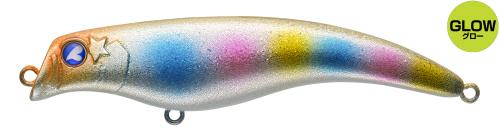
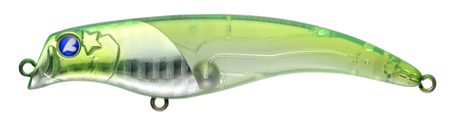
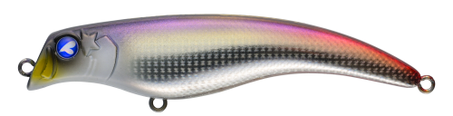
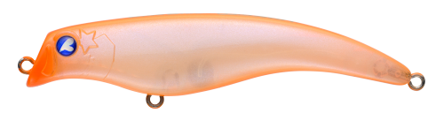

エグイド90F
（EGUID 90F）
エグイド90FはBlueBlue（ブルーブルー）のリップレスフローティングミノーです。
攻略が難しいマイクロベイトパターンに照準を合わせたモデル。引き波を伴いながら弱々しく泳ぐアクションは、遊泳力の低いベイトに近い波動で、小さなベイトに偏食した魚にも口を使わせます。水面直下をデッドスローで誰でも簡単に引けるのも特徴です。

画像出典:BlueBlue公式HP
スペック
- メーカー
- BlueBlue（ブルーブルー）
- タイプ
- リップレスミノー（フローティング）
- 全長
- 90mm
- 自重
- 11.5g
- レンジ
- 水面〜20cm
- フック
- #5×2
- リング
- #3
- ターゲット
- シーバス
- 価格
- 1,810円（税別）
▼今すぐチェック

エグイド90Fの特徴
弱々しい引き波で、難攻不落のボイルを攻略する
-
遊泳力の低いベイトに近い波動
引き波を伴いながら弱々しく泳ぐアクションで、小型ベイトに近い波動を出します。マイクロベイトに偏食して食わせにくい魚にも効きます。
-
水面直下を誰でも簡単に引ける
レンジ調整が難しい水面直下を、デッドスローで誰でも簡単に引けます。
-
フッキング率を上げる形状
テールが細く、フロントフックが一番下になる形状。小さいベイトを食うときの弱い吸い込みでも、しっかりフッキングできるように設計されています。
エグイド90Fの使い方
基本はデッドスローのただ巻き。水面直下を、引き波を出しながらゆっくり引いてきます。
ルアーが遠いときはロッドを立てて、近いときはロッドを下げると、水面直下をキープしやすくなります。ボイルが出ているときは、ボイルの奥に投げて通すのがおすすめです。
エグイド90Fの得意な状況
ハクやバチ、小さなカタクチなどマイクロベイトを食っていて、ボイルが出ているのに食わないとき。河川や港湾の常夜灯まわりなど、表層の難しい状況に向いています。
ワンポイント
もっと浅いレンジを小さいシルエットで引きたいときは、同じBlueBlueのイネムン60やミニゾー45とローテーションするのがおすすめです。
BlueBlueのマイクロベイト向けルアーの使い分け
| モデル | 全長／自重 | 得意な場面 |
|---|---|---|
| エグイド90F | 90mm／11.5g | レンジ水面〜20cm。引き波で弱々しく誘う（本記事のモデル） |
| イネムン60 | 60mm／6g | 水面を押す小さな引き波系トップ |
| ミニゾー45 | 45mm／3g | ハクなど極小ベイトのときに |
ベイトの大きさに合わせてシルエットを選び、反応がなければローテーションしましょう。
人気カラー
公式ラインナップから4色を紹介します（カラー名は公式の表記のまま）。

#06 オレンジキャンディグローオレンジにグローをプラス。夜の常夜灯まわりや濁りに。

#10 ニッコリーBlueBlueの個性派カラー。定番色に反応がないときのローテーションに。

#11 ハックナチュラル系のカラー。澄み潮でスレた魚に見せたいときに。

#35 イブランリバース個性的なカラー。シルエットを変えて見せたいときに。
画像出典:BlueBlue公式HP
エグイド90Fに似ているルアー
-
 モニカ100F ジェットブースト
シマノ
詳細はこちら＞
モニカ100F ジェットブースト
シマノ
詳細はこちら＞
全長100mmのシャローランナー。レンジ0〜10cmを、もっと遠くまで飛ばして引きたいときに。
-
 キリンジ90
メガバス
詳細はこちら＞
キリンジ90
メガバス
詳細はこちら＞
全長90mm・自重14.5gのウェイクベイト。同じサイズで、引き波をもっと強く出したいときに。
-
 コモモSF-110
ima
詳細はこちら＞
コモモSF-110
ima
詳細はこちら＞
全長110mm・自重12gのシャローランナー。同じくらいの重さで、0〜50cmをナチュラルに引きたいときに。